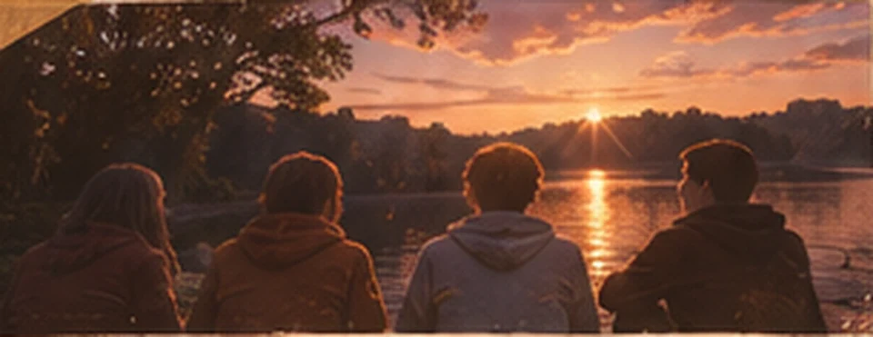

Hi, I'm Anaelle.
I'm a filmmaker, game creator and storyteller drawn to growing up, finding belonging, and the strange magic hiding in ordinary places.
I like making things that feel lived in — whether it's a film, a game, or a place someone can get lost in.
A few tools I use
- Unity
- Figma
- Premiere Pro
- After Effects
- ChatGPT
Projects
Field notes · selected works
Projects

Video GameTrust The Plan
A narrative-driven game combining live-action cutscenes with strategy gameplay.
 Video game
Video gameBetween the Trees
Somewhere between adventure and memory.
 Worldbuilding
WorldbuildingA Place to Return To
Little worlds with stories of their own.
 Creative project
Creative projectDragon Forest Scene
One small fantasy world, built by hand.
 Short film
Short filmLast Summer Tape
Some summers stay with you.
 Worldbuilding
WorldbuildingLantern Paths
Warm windows and worlds worth wandering through.
to be continued